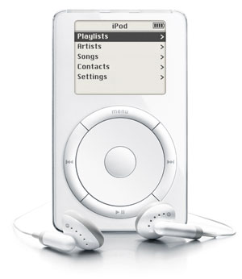
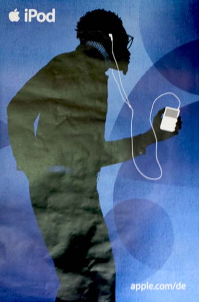
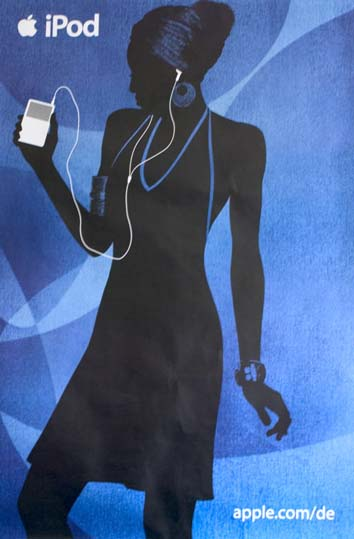

Chương 29

ứ mỗi năm Jobs lại chọn những nhân viên giá trị nhất của mình cho một chuyến hành quân bí mật, được ông gọi là “Nhóm 100.” Họ được chọn dựa trên một nguyên tắc đơn giản: những người bạn sẽ đem theo nếu như chỉ có thể chọn 100 người đi cùng bạn trên chiếc xuồng cứu hộ tới công ty tiếp theo, ở cuối mỗi chuyến đi, Jobs thường đứng trước một tấm bảng (ông thích những tấm bảng bởi nó cho ông sự kiểm soát tuyệt đối và chúng mang lại sự tập trung) và hỏi, “10 thứ chúng ta nên làm tiếp theo là gì?” Mọi người sẽ chiến đấu để đưa ý tưởng của mình vào danh sách.
Jobs sẽ viết chúng ra, và gạch đi những cái ông thấy tệ. Sau một loạt những mánh khóe, họ đưa ra được một danh sách gồm 10 ý tưởng. Sau đó Jobs sẽ gạch bỏ 7 ý tưởng dưới cùng và nói, “Chúng ta chỉ có thể làm 3”.
Năm 2001, Apple đã hồi sinh mảng máy tính cá nhân của mình. Đó là lúc để tư duy khác biệt. Một loạt các hướng đi mới ở đầu danh sách trên tấm bảng của ông năm đó.
Ở thời điểm đó, không khí ảm đạm có nguồn góc từ lĩnh vực kỹ thuật số. Bong bóng dot-com đã vỡ tung, sàn giao dịch NASDAQ giảm 50% so với đỉnh cao của nó. Chỉ có 3 công ty công nghệ có hoạt động quảng cáo trong giải Super Bowl tháng 1 năm 2001, so với 17 công ty của năm trước. Tuy nhiên, cảm giác về sự suy thoái còn đi xa hơn nữa. Suốt 25 năm kể từ khi Jobs và Wozniak sáng lập Apple, máy tính cá nhân là trung tâm của cuộc cách mạng số. Và giờ thì các chuyên gia cho rằng vai trò trung tâm của nó đã chấm dứt. Nó đã “trưởng thành và trở nên tẻ nhạt,” phóng viên Walt Mossberg của Wall Street Journal viết. Jeff Weitzen, CEO của Gateway tuyên bố “Chúng tôi đang tách mảng máy tính cá nhân khỏi vai trò trung tâm.” Đó là lúc Jobs xúc tiến một chiến lược mới rất lớn có thể biến đổi Apple - và toàn bộ ngành công nghiệp công nghệ. Máy tính cá nhân, thay vì bị đưa ra ngoài cuộc, sẽ được biến thành “một trung tâm số” dùng để phối hợp với nhiều loại thiết bị khác nhau, từ máy chơi nhạc cho tới máy quay phim, chụp ảnh. Bạn kết nối và đồng bộ tất cả các thiết bị với máy tính của mình, nó có thể quản lý âm nhạc, ảnh, video, văn bản và tất cả các khía cạnh mà Jobs gẤn cho “phong cách số” của bạn. Apple sẽ không còn là một công ty máy tính nữa - thực tế nó đã bỏ từ đó ra khỏi tên của mình - nhưng Macintosh sẽ được khôi phục để trở thành trung tâm của loạt thiết bị mới đầy bất ngờ, bao gồm iPod, iPhone và iPad.
Khi bước sang tuổi 30, Jobs đã làm một phép ẩn dụ với các album ca nhạc, ông trầm ngâm về việc vì sao những người trên 30 lại phát triển những lối suy nghĩ cứng nhắc và trở nên thiếu sáng tạo. “Người ta bế tắc trong những lối mòn, giống như những rãnh trong một đĩa than, và họ không bao giờ thoát ra khỏi chúng,” ông nói. ở tuổi 45, Jobs giờ đang sửa soạn thoát ra khỏi lối mòn của mình.
FireWire
Tầm nhìn của Jobs về việc máy tính của bạn sẽ trở thành trung tâm số bắt đầu từ một công nghệ có tên FireWire, được Apple phát triển đầu những năm 1990. Đó là một cổng kết nối tốc độ cao cho phép di chuyển các tập tin kỹ thuật số từ thiết bị này qua thiết bị khác. Những nhà sản xuất máy ảnh của Nhật Bản đã sử dụng chúng, và Jobs quyết định tích hợp nó trong phiên bản cập nhật của iMac phát hành tháng 10 năm 1999. Ông bắt đầu nhìn FireWire như một phần của hệ thống cho phép chuyển các video từ máy ảnh sang máy tính, nơi chúng có thể được sửa chữa và phân phối.
Để thực hiện điều đó, chiếc iMac cần một phần mềm xử lý video tốt. Vì thế Jobs đã tới gặp những người bạn cũ của mình ở Adobe, công ty đồ họa số, và nhờ họ phát triển phiên bản mới dành cho Mac của Adobe Premiere, vốn đã phổ biến trên các máy tính Windows. Các nhà điều hành của Adobe đã khiến Jobs ngỡ ngàng khi thẳng thừng từ chối điều này. Họ nói rằng Macintosh có quá ít người dùng để khiến nó đáng giá. Jobs cực kỳ giận dữ và cảm thấy như mình bị phản bội. “Tôi đã đặt Adobe vào trong kế hoạch, vậy mà họ lại bủn xỉn với tôi,” ông trách móc. Adobe còn làm mọi thứ tệ hơn nữa khi không phát triển những chương trình nổi tiếng khác, như Photoshop cho Mac OSX(28), mặc dù Macintosh rất phổ biến trong giới thiết kế và những nhóm sáng tạo khác, vốn đều dùng những ứng dụng này.
Jobs không bao giờ tha thứ cho Adobe, một thập kỷ sau ông bước vào cuộc chiến công khai với công ty này khi không cho phép Adobe Flash chạy trên iPad. ông mang theo một bài học giá trị củng cố cho khao khát kiểm soát từ đầu đến cuối tất cả những thành phần chủ chốt của một hệ thống: “Góc nhìn chủ đạo của tôi khi bị từ chối bởi Adobe năm 1999 là việc chúng tôi sẽ không tham gia bất kỳ vấn đề nào nếu như không thể kiểm soát cả phần cứng lẫn phần mềm, nếu không chúng tôi sẽ không giữ nổi đầu mình.”
Vì thế từ năm 1999 Apple bắt đầu sản xuất phần mềm ứng dụng cho Mac, tập trung vào đối tượng giao thoa giữa nghệ thuật và công nghệ. Những phần mềm đó gồm có Final Cut Pro, dùng để chỉnh sửa video; iMovie là phiên bản đơn giản hơn dành cho người dùng thông thường: iDVD dùng để ghi video hay nhạc ra đĩa; iPhoto để cạnh tranh với Photoshop; GarageBand để tạo và phối nhạc; iTunes để quản lý các bài hát; và iTunes store, dùng để mua nhạc.
Ý tưởng của trung tâm số nhanh chóng được tập trung phát triển. “Tôi vỡ lẽ ra điều đó với những chiếc máy ảnh,” Jobs nói. “Sử dụng iMovie có thể khiến chiếc máy ảnh của bạn giá trị hơn hàng chục lần.” Thay vì phải mất hàng trăm giờ cho các cảnh quay gốc mà bạn sẽ không bao giờ vượt qua được, bạn có thể chỉnh sửa nó trên máy tính của mình, tạo những cảnh mờ trang nhã, thêm âm nhạc, thêm danh sách những người thực hiện, điền tên bạn là nhà sản xuất. Nó cho phép người dùng sáng tạo, thể hiện bản thân họ, để tạo ra những thứ có cảm xúc. “Đó là khi ý tưởng máy tính sẽ biến đổi thành một thứ khác đến với tôi.”
Jobs có một cái nhìn khác: nếu máy tính phục vụ như một trung tâm, nó sẽ cho phép các thiết bị di động trở nên đơn giản hơn. Rất nhiều tính năng mà các thiết bị cố thực hiện, chẳng hạn như chỉnh sửa video hoặc ảnh, chúng thực hiện nó một cách hạn chế vì các màn hình quá nhỏ và khó thích nghi với các menu lấp đầy các tính năng. Máy tính có thể xử lý chúng dễ hơn rất nhiều.
Và một điều nữa... điều Jobs nhìn thấy là nó sẽ làm việc tốt nhất khi mọi thứ - thiết bị, máy tính, phần mềm, ứng dụng, FireWire - đều được kết hợp chặt chẽ với nhau. “Tôi càng tin hơn về khả năng cung cấp các giải pháp trọn gói,” ông nhớ lại.
Sự đẹp đẽ trong nhận thức này là ở chỗ chỉ có một công ty được đặt ở vị trí có thể đi theo cách tiếp cận này. Microsoft viết phần mềm, Dell và Compaq làm phần cứng, Sony sản xuất rất nhiều thiết bị số, Adobe phát triển rất nhiều ứng dụng. Nhưng chỉ có Apple làm tất cả những thứ đó. “Chúng tôi là công ty duy nhất sở hữu toàn bộ các công cụ - phần cứng, phần mềm và hệ điều hành,” ông giải thích với Time. “Chúng tôi có thể chịu trách nhiệm toàn bộ đối với trải nghiệm người dùng. Chúng tôi có thể làm những việc mà các công ty khác không thể.” Công cuộc tích hợp của Apple vào chiến lược trung tâm số được bắt đầu từ video. Với FireWire, bạn có thể chuyển các video của bạn vào máy Mac, và với iMovie bạn có thể biến nó thành một kiệt tác. Sau đó thì sao? Bạn có thể muốn ghi nó ra vài đĩa DVD để bạn cùng bạn bè có thể xem nó trên tivi.
“Vì thế chúng tôi đã bỏ rất nhiều thời gian làm việc với các nhà sản xuất ổ đĩa để có được các ổ đĩa thông dụng có thể ghi DVD,” ông nói. “Chúng tôi là công ty đầu tiên có thể bán nó.” Như mọi khi Jobs tập trung vào việc làm sản phẩm đơn giản nhất có thể cho người dùng, và đó là chìa khóa cho thành công của họ. Mike Evangelist, người từng làm việc ở Apple với các phần mềm thiết kế, nhớ lại việc trình diễn cho Jobs giao diện của một phiên bản đời đầu. Sau khi xem một loạt các hình chụp, Jobs nhảy lên, cầm lấy chiếc bút và vẽ một hình chữ nhật đơn giản lên trên bảng.
“Đây là ứng dụng mới,” ông nói. “Nó có một cửa sổ. Bạn kéo video vào trong cửa sổ này. Sau đó bạn nhấn vào nút này và nói „Ghi.‟ Vậy thôi. Đó là thứ chúng ta sẽ làm.” Evangelist chết lặng, tuy nhiên nó chính là khởi đầu đã dẫn tới sự đơn giản của thứ trở thành iDVD sau này. Jobs thậm chí còn giúp thiết kế biểu tượng của nó “Ghi”.
Jobs cũng biết việc nhiếp ảnh số đang chuẩn bị bùng nổ, vì vậy Apple phát triển nhiều cách để biến máy tính thành trung tâm của các bức ảnh của bạn. Nhưng ít nhất trong năm đầu tiên ông đã không để mắt tới một cơ hội rất lớn. HP và một vài công ty khác đã sản xuất một ổ đĩa có thể ghi những đĩa CD ca nhạc, nhưng Jobs quyết định Apple nên tập trung vào video thay vì âm nhạc.
Thêm vào đó, sự cố chấp của ông trong việc bỏ ổ đĩa dạng khay hiện có của iMac và thay vào đó một ổ dạng rãnh trang nhã hơn nhưng đồng nghĩa là không thể tích hợp ổ ghi CD đầu tiên, vốn được thiết kế ban đầu theo dạng khay. “Chúng tôi đã lỡ chuyến tàu đó,” ông nhớ lại. “Và chúng tôi cần phải đuổi theo thật nhanh.”
Dấu ấn của một công ty sáng tạo không chỉ là việc nó luôn có những ý tưởng mới, mà còn biết cách đuổi theo khi biết mình đang ở phía sau.
iTunes
Không mất nhiều thời gian để Jobs nhận ra thế giới âm nhạc số đang trở nên lớn mạnh. Vào năm 2000, mọi người sao chép âm nhạc vào máy tính từ đĩa CD, hoặc tải chúng từ những dịch vụ chia sẻ như Napster, và ghi các danh sách nhạc vào đĩa trắng của họ. Trong năm này số lượng đĩa trắng được bán ở Mỹ là 320 triệu đĩa trong khi dân số chỉ có 281 triệu người. Có nghĩa là rất nhiều người thực sự chuyển sang ghi đĩa, còn Apple thì không phục vụ họ. “Tôi cảm thấy mình như một kẻ đần độn,” ông nói với Fortune. “Tôi nghĩ mình đã bỏ lỡ nó. Chúng tôi phải làm việc cật lực để bắt kịp.”
Jobs thêm ổ ghi CD vào iMac, nhưng nó không đủ. Mục tiêu của ông là đơn giản hóa việc chuyển nhạc từ đĩa CD, quản lý nó trên máy tính, và ghi danh sách nhạc ra đĩa. Các công ty khác đã phát triển các ứng dụng quản lý nhạc, nhưng chúng rất rườm rà và phức tạp. Một trong những tài năng của Jobs là phát hiện ra các thị trường với đầy những sản phẩm hạng hai. ông đã xem xét các ứng dụng âm nhạc đã có - bao gồm Real Jukebox, Windows Media Player, và một cái của HP có đi kèm với ổ ghi CD - và đi tới một kết luận: “Chúng quá phức tạp và chỉ có các thiên tài mới dùng hết một nửa số chức năng của chúng.”
Đó là cơ hội của Bill Kincaid. Một cựu kỹ sư phần mềm của Apple, ông đang chạy xe tới một đường đua ở Willows, California để tham gia cuộc đua với chiếc xe thể thao Formula Ford của mình trong khi (không được hợp lý lắm) nghe Đài phát thanh quốc gia. Ông nghe được một bản tin về thiết bị nghe nhạc di động Rio có thể chơi các bản nhạc số theo định dạng MP3, ông đã ngửng đầu lên khi nghe phóng viên nói “Đừng quá vui mừng, người dùng Mac, bởi nó không hoạt động trên các máy Mac.” Kincaid tự nói với mình, “Ha! Mình có thể xử lý điều này!” Để giúp viết phần mềm quản lý Rio cho Mac, ông đã gọi cho bạn mình là Jeff Robbin và Dave Heller, đều là cựu kỹ sư phần mềm của Apple. Sản phẩm của họ, được biết đến với tên SoundJam, đem tới cho người dùng Mac một giao diện của Rio và phần mềm để quản lý các bài hát trong máy của họ. Vào tháng 7 năm 2000, khi Jobs đang thúc đẩy nhóm của ông đưa ra một phần mềm quản lý âm nhạc, Apple đã mua lại SoundJam, mang những người sáng lập quay lại con thuyền Apple. (Cả 3 đều ở lại công ty và Robbin tiếp tục quản lý nhóm phát triển phần mềm âm nhạc trong 1 thập kỷ sau đó. Jobs xem Robbin quý giá đến mức ông từng chấp nhận cho phép phóng viên Time gặp ông này sau khi đã cam kết sẽ không in họ của Jeff trên báo.) Jobs làm việc cá nhân với họ để biến SoundJam thành một sản phẩm của Apple. Nó chất đầy những tính năng các loại, và do đó có rất nhiều màn hình phức tạp. Jobs ép họ phải làm cho nó đơn giản hơn và quyến rũ hơn. Thay vì một giao diện cho phép bạn ghi rõ bạn muốn tìm kiếm theo tên nghệ sĩ, tên bài hát hay album, Jobs yêu cầu một ô đơn giản cho phép bạn gõ bất kỳ thứ gì bạn muốn. Từ iMovie họ lấy lại được giao diện phủ kim loại bóng và cả một cái tên. Họ gọi nó là iTunes.
Jobs giới thiệu iTunes vào tháng 1 năm 2001tại Macworld như một phần của chiến lược trung tâm số. Nó miễn phí cho tất cả người dùng Mac, ông thông báo. “Tham gia cuộc cách mạnh âm nhạc với iTunes, và làm thiết bị nghe nhạc của bạn có giá hơn hàng chục lần,” ông kết luận trong những tràng pháo tay không dứt. Như câu khẩu hiệu quảng bá của ông sau đó: Sao chép. Nhào trộn. Ghi đĩa.
Buổi chiều hôm đó Jobs gặp John Markoff của tờ New York Times. Buổi phỏng vấn trở nên tồi tệ, nhưng cuối cùng Jobs ngồi trước máy Mac của mình và trình diễn iTunes. “Nó gợi nhớ tới tuổi trẻ của tôi,” ông nói khi những hiệu ứng nhảy múa trên màn hình. Nó khiến ông hồi tưởng lại khi sử dụng chất kích thích. Trải nghiệm sử dụng là một trong hai hoặc ba điều quan trọng nhất ông từng làm trong đời, Jobs nói với Markoff. Những người chưa bao giờ dùng thuốc sẽ không bao giờ thực sự hiểu được ông.
iPod
Bước kế tiếp trong chiến lược trung tâm số là làm một máy nghe nhạc di động. Jobs nhận ra việc Apple có cơ hội thiết kế một thiết bị sánh đôi cùng phần mềm iTunes, cho phép nó trở nên đơn giản hơn. Các nhiệm vụ phức tạp có thể được xử lý trên máy tính, những thứ dễ dành cho thiết bị.
Vì thế iPod đã ra đời, thiết bị cho phép Apple bắt đầu chuyển mình từ một công ty máy tính trở thành công ty có giá trị lớn nhất thế giới.
Jobs có niềm đam mê đặc biệt với dự án này bởi ông yêu âm nhạc. Những chiếc máy nghe nhạc đã có trên thị trường, ông nói với các đồng nghiệp, “thực sự vớ vẩn.” Phil Schiller, Jon Rubinstein, và toàn bộ nhóm của ông đều đồng ý. Trong khi xây dựng iTunes, họ dành thời gian với Rio và các máy nghe nhạc khác, và vui vẻ hành hạ chúng. “Chúng tôi ngồi quanh và nói, „Những thứ này thực sự bốc mùi,‟” Schiller nhớ lại. “Chúng lưu khoảng 16 bài hát, và bạn chẳng thể nào tìm ra cách sử dụng chúng.”
Jobs bắt đầu thúc đẩy một máy nghe nhạc di động từ mùa thu năm 2000, nhưng Rubinstein đã phản hồi về việc các linh kiện cần thiết chưa sẵn sàng, ông yêu cầu Jobs chờ đợi. Vài tháng sau Rubinstein đã có thể tìm được một màn hình LCD nhỏ phù hợp và một pin xạc Li-poly(^^). Thách thức lớn nhất là tìm một ổ đĩa đủ nhỏ nhưng có dung lượng đủ lớn để tạo nên một máy nghe nhạc tuyệt vời. Vào tháng 2 năm 2001, ông có chuyến thăm định kỳ tới các nhà cung cấp linh kiện của Apple ở Nhật.
Vào cuối cuộc họp thường lệ với Toshiba, các kỹ sư nhắc tới một sản phẩm mới họ có trong phòng thí nghiệm và sẽ sẵn sàng ra mắt vào tháng 6. Đó là một ổ cứng nhỏ, 1,8 inch (bằng kích cỡ một tờ đô la), có thể chứa 5 Gigabytes dữ liệu (khoảng một nghìn bài hát), và họ chưa rõ nên làm gì với nó. Khi các kỹ sư của Toshiba đưa nó cho Rubinstein, ông ngay lập tức biết nó có thể dùng làm gì. Hàng nghìn bài hát trong túi của ông! Hoàn hảo. Tuy vậy ông vẫn giữ vẻ lãnh đạm. Jobs cũng đang ở Nhật, có bài diễn thuyết ở hội nghị Macworld Tokyo. Họ gặp nhau tối hôm đó ở khách sạn Okura, nơi Jobs nghỉ lại. “Giờ tôi đã biết cách để làm nó,” Rubinstein nói với ông.
“Tất cả những gì tôi cần là tờ séc 10 triệu đô-la.” Jobs ngay lập tức phê duyệt. Và Rubinstein bắt đầu đàm phán với Toshiba để giành độc quyền sử dụng từng chiếc đĩa mà họ có thể làm, ông cũng bắt đầu tìm kiếm người có thể dẫn đầu nhóm phát triển.
Tony Fadell là một chuyên gia khởi nghiệp có hạng với vẻ ngoài đặc chất công nghệ và một nụ cười hấp dẫn. Anh từng lập 3 công ty từ hồi còn học đại học Michigan.
Sau đó anh làm cho công ty phát triển thiết bị cầm tay General Magic (nơi anh gặp Andy Hertzfeld và Bill -Atkinson những người lánh nạn từ Apple), và sau đó có khoảng thời gian không thoải mái ở Philips Electronics, nơi anh, với mái tóc bạch kim cắt cua và phong cách nổi loạn, đối đầu với văn hóa trầm lặng. Anh có một vài ý tưởng về việc phát triển những máy nghe nhạc số tốt hơn, bởi anh đã thất bại với các hãng RealNetworks, Sony và Philips. Vào một ngày, khi đang ở Colorado trượt tuyết cùng ông chú ruột, điện thoại của Fadell đổ chuông khi anh đang ngồi trên cáp treo. Đó là Rubinstein, người nói với anh Apple cần một người làm việc trên một “thiết bị điện tử nhỏ”. Fadell, không thiếu tự tin, khoe khoang về việc anh là một phù thủy trong việc chế tạo những thiết bị như vậy. Rubinstein đã mời anh tới Cuptertino.
Fadell nghĩ rằng mình được thuê để làm việc trên một thiết bị trợ lý kỹ thuật số, một phiên bản thành công hơn Newton. Nhưng khi gặp Rubinstein, chủ đề nhanh chóng chuyển sang iTunes, mới phát hành được 3 tháng. “Chúng tôi đang cố gắng kéo những chiếc máy nghe nhạc hiện thời về phía iTunes và chúng trông thật kinh khủng, tuyệt đối kinh khủng,” Rubinstein nói với cậu ta.
“Chúng tôi nghĩ rằng mình nên tự phát triển một phiên bản.” Fadell đã run lên. “Tôi say mê âm nhạc. Tôi đã thử vài thứ giống như vậy ở RealNetworks, và tôi từng ném một cái máy chơi MP3 cho Palm.” Fadell đồng ý tham gia, ít nhất là ở vị trí tư vấn.
Sau vài tuần Rubinstein cố nài xem liệu cậu có muốn dẫn dắt nhóm này không, anh cần phải trở thành nhân viên toàn thời gian ở Apple. Nhưng Fadell đã từ chối; anh thích sự tự do của mình.
Rubinstein đã rất tức giận với thứ ông cho là sự lằng nhằng của Fadell. “Đây là một trong các quyết định của cuộc đời,” ông nói với Fadell.” Cậu sẽ không bao giờ phải ân hận vì nó.” Ông quyết định ép Fadell. ông đã triệu tập cuộc họp với khoảng 20 người thuộc dự án này.
Khi Fadell bước vào, Rubinstein nói với anh, “Tony, chúng ta sẽ không làm dự án này cho tới khi cậu làm toàn thời gian. Cậu sẽ làm hay không? Cậu cần quyết định ngay bây giờ.” Fadell nhìn vào mắt Rubinstein, sau đó quay qua những người khác và nói, “Việc này lúc nào cũng xảy ra ở Apple à, mọi người bị ép phải ký hợp đồng?” Anh dừng lại một chút rồi đồng ý và bắt tay Rubinstein một cách miễn cưỡng. “Chuyện đó đã để lại một số khúc mắc giữa Jon và tôi trong nhiều năm,” Fadell nhớ lại. Rubinstein cũng đồng ý: “Tôi không nghĩ cậu ấy đã tha thứ cho tôi vì việc đó.”
Fadell và Rubinstein luôn xung đột, bởi cả 2 người họ đều nghĩ mình đã khai sinh ra iPod.
Theo cách Rubinstein nhìn nhận thì ông đã được Jobs giao nhiệm vụ nhiều tháng trước, tìm thấy những ổ đĩa của Toshiba, tìm ra màn hình, pin và các linh kiện thiết yếu khác. Sau đó ông mang Fadell tới để ráp chúng lại với nhau, ông và những người khác không vừa lòng với cách nhìn của Fadell về việc ví anh với “Tony Baloney.” Nhưng ở góc độ của Fadell, trước khi tới Apple anh đã có những kế hoạch cho một chiếc máy chơi MP3 hoàn hảo, và anh đã nghiên cứu với nhiều công ty trước khi đồng ý đến với Apple, vấn đề về việc ai sẽ là người nhận nhiều công trạng cho iPod hơn, hay danh hiệu người khai sinh ra iPod, là một cuộc đấu qua nhiều năm với các cuộc phỏng vấn, báo chí, các trang web, và thậm chí là các bản ghi trên Wikipedia.
Nhưng vài tháng sau đó họ quá bận để cãi nhau. Jobs muốn iPod được bán ra vào Giáng sinh, và có nghĩa là nó phải sẵn sàng để giới thiệu vào tháng 10. Họ tìm các công ty đang thiết kế các máy chơi MP3 có thể dùng làm nền móng cho công việc ở Apple và chọn một công ty nhỏ có tên là PortalPlayer. Fadell nói với nhóm này rằng “Đây là dự án sẽ thay đổi Apple, và 10 năm nữa sẽ là ngành kinh doanh âm nhạc chứ không phải ngành kinh doanh máy tính.” Anh thuyết phục họ ký một thỏa thuận độc quyền, và nhóm của anh bắt đầu sửa đổi sự thiếu hụt trong PortalPlayer, chẳng hạn như giao diện phức tạp, pin yếu, và không có khả năng tạo một danh sách nhiều hơn 10 bài.
Chính nó!
Có một số cuộc họp đáng nhớ bởi vì chúng đánh dấu một thời khắc lịch sử và nó cho thấy cách người lãnh đạo điều hành. Chẳng hạn như cuộc họp ở phòng hội nghị tại tầng 4 của Apple vào tháng 4 năm 2001, nơi Jobs quyết định những phần cơ bản của iPod. Có mặt để nghe Fadell trình bày kế hoạch của mình với Jobs là Rubinstein, Schiller, Ive, Jeff Robbin, và giám đốc marketing Stan Ng. Fadell không biết Jobs, và anh cảm thấy bị đe dọa một cách dễ hiểu.
“Khi ông ấy đi vào phòng họp, tôi đã đứng dậy và nghĩ, „Whoa, đây là Steve!‟ Và tôi thực sự ở trạng thái phòng bị vì tôi đã nghe về việc ông ấy có thể cục cằn tới mức nào.” Buổi họp bắt đầu bằng phần giới thiệu về thị trường tiềm năng và các công ty khác đang làm gì. Jobs, như thường lệ, không có sự kiên nhẫn, “ông ấy không chú ý tới bài giới thiệu được quá một phút,” Fadell nói. Khi màn hình hiển thị những đối thủ tiềm tàng trên thị trường, ông ấy phẩy tay. “Đừng có lo về Sony,” ông nói. “Chúng ta biết mình đang làm gì, và họ thì không.” Sau đó, họ dừng việc trình chiếu, thay vào đó Jobs tra tấn cả nhóm với hàng loạt câu hỏi. Fadell rút ra được một bài học: “Steve muốn vào thời điểm đó (cuộc họp) thì phải nói trực tiếp về các vấn đề.
Ông ấy từng một lần nói với tôi, „Nếu cậu cần trình chiếu, thì nó có nghĩ là cậu đang không biết mình nói về cái gì.‟”
Jobs thích được nhìn các mẫu sản phẩm thật để ông có thể cảm nhận, xem xét và vuốt ve.
Vì vậy Fadell mang tới phòng họp 3 mô hình; Rubinstein đã hướng dẫn cậu cách giới thiệu định hướng lần lượt các mẫu sao cho lựa chọn mà ông ấy thích đúng là một mẫu mà họ cho là vượt trội.
Họ giấu mẫu đó ở dưới vòng gỗ tròn ở giữa bàn.
Fadell bắt đầu phần giới thiệu bằng cách lấy tất cả các phần họ sử dụng ra khỏi hộp và để lên bàn. ở đó có ổ đĩa 1,8 inch, màn hình LCD, bo mạch, pin, tất cả được dẤn nhãn đề giá và trọng lượng. Khi đưa chúng ra, họ bàn bạc về việc giá cả và kích thước có thể xuống tới mức nào trong năm tới. Một số mảnh có thể gắn lại với nhau giống như trò chơi Lego để thể hiện các lựa chọn.
Sau đó Fadell đưa ra các mô hình của anh, làm bằng xốp cách nhiệt với các tấm chì được chèn vào để có trọng lượng phù hợp. Cái đầu tiên có một khe cắm thẻ nhớ ngoài. Jobs bỏ qua nó vì sự phức tạp. Cái thứ 2 có bộ nhớ RAM động, rẻ hơn nhưng sẽ mất hết các bài hát nếu hết pin. Jobs không hài lòng. Tiếp theo Fadell ghép vài phần nhỏ lại với nhau để thể hiện một thiết bị với ổ cứng 1,8 inch sẽ trông thế nào. Jobs nhìn khá thích thú. Buổi trình diễn tiến dần tới chỗ Fadell nâng tấm gỗ lên và lấy ra mô hình được lắp ghép hoàn chỉnh của lựa chọn này. “Tôi đã hy vọng có thể thêm chút thời gian với những miếng ghép Lego, nhưng Steve chọn ngay lựa chọn dùng ổ cứng theo cách chúng tôi đã mô hình nó,” Fadell nhớ lại. Cậu ấy khá ngạc nhiên với quy trình làm việc.” Tôi từng ở Philips, nơi các quyết định như thế này cần phải họp đi họp lại với rất nhiều lượt trình chiếu PowerPoint và phải nghiên cứu thêm nhiều lần nữa.”
Tiếp đến là lượt của Phil Schiller. “Tôi có thể mang các ý tưởng của mình ra được không?
ông hỏi. ông rời khỏi phòng và quay lại với khá nhiều các mô hình iPod, tất cả đều giống nhau ở mặt trước: vòng xoay nổi tiếng sau này. “Tôi đã nghĩ về cách bạn duyệt qua danh sách,” ông nhớ lại. “Bạn không thể nhấn một cái nút hàng trăm lần được. Chẳng phải sẽ rất tuyệt nếu bạn có một vòng xoay?” Bằng cách cải thiện vòng xoay với ngón tay của bạn, bạn có thể lướt qua các bài hát.
Bạn càng giữ lâu thì càng lướt nhanh hơn, vì thế bạn có thể duyệt qua hàng trăm bài một cách dễ dàng. Jobs reo lên, “Chính nó!” ông đã để Fadell và các kỹ sư làm việc trên ý tưởng đó.
Khi dự án được bắt đầu, Jobs mải mê với nó hàng ngày. Yêu cầu chính của ông là “Đơn giản hóa!” ông có thể lướt qua từng màn hình của giao diện người dùng và kiểm tra một cách khắt khe: nếu ông muốn một bài hát hoặc một tính năng, ông cần phải có nó trong 3 lần nhấn nút. Và việc nhấn cần có cảm giác. Nếu ông không thể tìm ra cách đi tới cái gì đó, hoặc nó mất hơn 3 lần nhấn, ông sẽ trở nên thô lỗ. “Có những lúc ta phải phát điên lên vì những vấn đề trong giao diện người dùng, và nghĩ tới việc cân nhắc tất cả các khả năng, và ông thường nói „Cậu có nghĩ về cái này không?‟” Fadell nói. “Và tất cả chúng tôi cùng nói, „Chết tiệt‟, ông ấy định nghĩa lại vấn đề hoặc cách tiếp cận, và những vấn đề nhỏ của chúng tôi sẽ biến mất.” Mỗi đêm Jobs có thể gọi điện thoại để nói về những ý tưởng của mình. Fadell và những người khác sẽ phải gọi nhau dậy và thảo luận về đề nghị mới nhất của Jobs, họ thường tụ tập lại để hướng ông tới chỗ mà họ muốn, nhưng thường chỉ có hiệu quả trong một nửa số trường hợp.
“Chúng tôi có một cơn lốc những ý tưởng từ Steve và cần phải cố đi trước nó,” Fadell nói. “Mỗi ngày đều có những thứ như vậy, có thể là cái cần gạt nên ở đây, hoặc màu của một cái nút, hay vấn đề về chiến lược giá cả. Với phong cách của ông ấy, bạn cần làm việc với đồng đội của mình, trông chừng giúp nhau.”
Một trong những tầm nhìn quan trọng của Jobs là càng nhiều chức năng được thực hiện trên iTunes càng tốt, hơn là thực hiện nó trên iPod. Sau này ông nhớ lại: Để giúp iPod thực sự dễ dùng - và việc này mất rất nhiều công sức tranh luận của tôi - chúng tôi cần giới hạn các dịch vụ mà thiết bị hỗ trợ. Thay vào đó chúng tôi đưa chức năng đó lên iTunes trên máy tính. Chúng tôi không cho phép bạn tạo danh sách nhạc ngay trên thiết bị. Bạn tạo chúng trên iTunes và sau đó đồng bộ với thiết bị. Điều đó đã gây tranh cãi. Nhưng thứ làm Rio và các thiết bị khác quá khó dùng là vì chúng phức tạp. Người dùng cần làm các tác vụ như tạo danh sách nhạc bằng thiết bị, vì nó không được tích hợp với phần mềm chơi nhạc trên máy tính của bạn.
Vì thế bằng việc sở hữu phần mềm iTunes và thiết bị iPod, nó cho phép chúng ta để máy tính và thiết bị làm việc cùng nhau, cho phép chúng ta đưa sự phức tạp tới đúng chỗ của nó.
Đỉnh cao trong hầu hết các sự đơn giản hóa là mệnh lệnh của Jobs, khiến các đồng sự hết sức ngạc nhiên, đó là iPod không có nút bậưtắt. Thực tế là hầu hết các thiết bị của Apple: Không cần phải có một cái như vậy. Thiết bị của Apple sẽ vào trạng thái ngủ đông nếu không được sử dụng, và nó sẽ thức dậy khi bạn chạm vào bất kỳ phím nào. Nhưng không cần phải có một cần gạt để “Tách - bạn đã tắt. Tạm biệt.”
Bỗng nhiên mọi thứ ở vào đúng vị trí của nó: một ổ cứng lưu được hàng nghìn bài hát; một giao diện và một vòng xoay cho phép bạn duyệt qua hàng nghìn bài hát; một kết nối FireWire cho phép bạn đồng bộ hàng nghìn bài hát mà không mất tới 10 phút. “Chúng tôi nhìn nhau và nói, „Nó sẽ trở nên thật tuyệt vời,‟” Jobs nhớ lại. “Chúng tôi biết nó tuyệt tới mức nào, bởi chúng tôi biết rõ mỗi người đều muốn có một cái cho riêng mình. Và ý tưởng này trở nên đơn giản một cách tuyệt vời: hàng nghìn bài hát trong túi của bạn.” Một trong những người soạn quảng cáo của chúng tôi đề xuất nên gọi nó là “Pod.” Jobs là người đã mượn từ tên iMac và iTunes để đổi nó thành iPod.
Sắc trắng của chú cá voi
Khi Jony Ive và tôi đang nghiên cứu mô hình xốp của chiếc iPod và cố hình dung ra sản phẩm hoàn thiện sẽ nhìn như thế nào thì một ý tưởng đến với cậu ấy trong buổi sáng khi đang lái xe từ nhà ở San Francisco tới Cupertino. Mặt trước của nó nên có màu trắng tinh khiết, anh nói với những đồng nghiệp trong xe, và nó cần được nối liền mảnh với mặt lưng bằng thép không trầy, sáng loáng. “Phần lớn những sản phẩm tiêu dùng nhỏ đều có cảm giác dễ dàng vứt đi,” Ive nói. “Vì không có sự hấp dẫn văn hóa nào với chúng. Điều tôi tự hào nhất về iPod là nó mang lại cảm giác rất đáng giá, không phải thứ có thể vứt bỏ.”

Thế hệ đầu tiên của Ipod
Màu trắng không chỉ là trắng đơn thuần, mà phải trắng tinh khiết. “Không chỉ là thiết bị, mà cả tai nghe của nó và những dây cáp nối và thậm chí là cục sạc,” anh nhớ lại. “Trắng tinh khiết.” Những người khác tiếp tục tranh luận về việc tai nghe tất nhiên nên là màu đen như tất cả những chiếc tai nghe khác. “Nhưng Steve hiểu nó ngay lập tức, và ủng hộ màu trắng,” Ive nói.
“Cần có sự thuần khiết trong nó.” Hình ảnh đôi tai nghe trắng ngoằn ngoèo giúp iPod trở thành một biểu tượng. Ive đã mô tả nó:
Có một thứ gì đó rất ý nghĩa, rất quan trọng ở nó và không mang lại cảm giác rẻ rúng, đồng thời nó cũng mang vẻ tĩnh lặng và tự chủ. Nó không ve vẩy đuôi trước mặt bạn. Nó tự chủ, và một chút điên rồ, với đôi tai nghe uốn lượn. Đó là lý do vì sao tôi thích màu trắng. Trắng không chỉ là một màu tự nhiên. Nó vô cùng thuần khiết và tĩnh lặng. Rõ nét và nổi bật nhưng cũng không kém phần kín đáo.
Nhóm marketing của Lee Clow ở TBWA\Chiat\Day muốn kỉ niệm hình tượng tự nhiên của chiếc iPod cùng dáng vẻ trắng toát của nó thay vì một quảng cáo giới thiệu sản phẩm truyền thống vốn đơn thuần chỉ giới thiệu các tính năng của thiết bị. James Vincent, một anh chàng người Anh trẻ tuổi cao lêu nghêu, người từng chơi cho một ban nhạc và từng làm công việc DJ, mới tham gia vào công ty quảng cáo, một cách tự nhiên đã giúp Apple tập trung quảng cáo vào những người yêu nhạc thuộc thế hệ ở bên thềm thiên niên kỷ mới thay vì thế hệ nổi loạn sau thế chiến. Với sự trợ giúp của giám đốc nghệ thuật Susan Alinsangan, họ đã tạo ra một chuỗi các biển quảng cáo và các áp phích cho chiếc iPod, và họ đưa ra các lựa chọn trên bàn họp của Jobs để ông có thể xem xét.

ở phía ngoài cùng bên phải họ để những lựa chọn truyền thống nhất, với những hình trực diện của iPod trên nền trắng, ở phía bên trái họ để những lựa chọn tạo hình và mang tính biểu tượng, thể hiện hình bóng của một người đang nhảy trong khi nghe nhạc với một chiếc iPod, dây tai nghe màu trắng dao động theo tiếng nhạc. “Nó thấu hiểu cảm xúc của bạn và mối quan hệ mãnh liệt giữa bạn và âm nhạc,” Vincent nói. Anh đề xuất với Duncan Milner, giám đốc sáng tạo, họ nên đứng một cách kiên quyết về phía bên trái, để xem họ có thể thu hút Jobs về phía này không. Khi ông đi vào, ông lập tức đi về phía bên phải, nhìn vào những bức ảnh thực tế của sản phẩm. “Nhìn nó rất tuyệt,” ông nói. “Hãy bàn về những cái này.” Vincent, Milner và Clow không nhúc nhích di chuyển chút nào ở phía còn lại. Cuối cùng, Jobs nhìn sang, liếc qua các lựa chọn mang tính biểu tượng hóa, và nói, “Oh, tôi đoán các anh thích những thứ này.” ông lúc lắc đầu. “Nó không thể hiện được sản phẩm. Nó không nói lên đó là thứ gì.” Vincent đề nghị rằng họ có thể sử dụng hình ảnh mang tính biểu tượng và thêm vào dòng ghi chú, “1000 bài hát trong túi của bạn.” Nó sẽ nói lên tất cả. Jobs nhìn lại phía bên phải bàn và cuối cùng đồng ý. Không có gì ngạc nhiên khi ông nhanh chóng nhận rằng đó là ý tưởng của mình trong việc thúc đẩy nhiều quảng cáo mang tính biểu tượng hơn. “Có vài người theo chủ nghĩa hoài nghi luôn hỏi, Thứ này thực sự sẽ giúp bán những chiếc iPod chứ?” Jobs nhớ lại. “Đó chính là khi việc trở thành một CEO trở nên thực sự hữu ích, vì tôi có thể thúc đẩy cho những ý tưởng này.”

Jobs nhận ra rằng có một lợi ích khác nữa khi Apple có một hệ thống tích hợp máy tính, phần mềm và các thiết bị. Điều đó có nghĩa là doanh số của iPod có thể thúc đẩy doanh số của iMac. Nghĩa là, ông có thể lấy tiền mà Apple dùng để quảng cáo cho iMac chuyển qua những quảng cáo cho iPod - biến đồng tiền trở nên giá trị gấp đôi. Thực tế là gấp ba, bởi những quảng cáo đó thu hút những đối tượng trẻ trung và sành điệu đến với thương hiệu Apple, ông nhớ lại: Tôi đã có một ý tưởng điên rồ về việc chúng tôi có thể bán nhiều iMac bằng việc quảng cáo cho iPod. Thêm vào đó, iPod sẽ biến Apple thành một biểu tượng của sự sáng tạo và trẻ trung. Vì thế tôi đã chuyển 75 triệu đô-la tiền quảng cáo sang cho iPod, mặc dù lĩnh vực này chưa chứng minh được nổi doanh thu bằng 1% con số đó. Điều đó có nghĩa là chúng tôi hoàn toàn thống trị thị trường máy nghe nhạc. Chúng tôi đã chi nhiều hơn tất cả các công ty khác tới hàng trăm lần.
Các clip quảng cáo trên ti vi thể hiện bóng người đang nhún nhảy theo những bài hát chọn bởi Jobs, Clow và Vincent. “Tìm chọn các bài hát trở thành niềm vui chính của chúng tôi trong các buổi họp marketing hàng tuần,” Clow nói. “Khi chúng tôi bật những bản đoạn khó nghe, Steve sẽ nói, Tôi ghét cái này,‟ và James sẽ nói chuyện với ông ấy về nó.” Các quảng cáo đã làm nổi tiếng rất nhiều ban nhạc, đáng kể nhất là Black Eyed Peas; Quảng cáo với bài “Hey Mama” là mẫu kinh điển của thể loại những bóng người nhảy múa. Khi các quảng cáo mới chuẩn bị được phát, Jobs thường hay suy nghĩ lại, gọi cho Vincent và yêu cầu anh hủy nó đi. “Nó nghe hơi cổ” hay “Nó nghe hơi tầm thường,” ông nói. “Hãy báo hủy nó đi”. James cảm thấy bối rối và cố nói lại với ông.
“Khoan đã, nó sẽ trở nên tuyệt vời,” anh tranh luận. Và Jobs luôn luôn mủi lòng, quảng cáo vẫn được làm, và ông sẽ thích nó.
Jobs giới thiệu iPod ngày 23 tháng 10 năm 2001, ở một trong các sự kiện giới thiệu sản phẩm theo phong cách đặc trưng của ông. “Gợi ý: nó không phải một máy Mac,” và nhận lấy những lời khiêu khích. Tới lúc tiết lộ sản phẩm, sau khi giới thiệu các khả năng kỹ thuật, Jobs không làm thủ thuật quen thuộc của ông là đi tới chiếc bàn và gỡ bỏ lớp nhung phủ trên sản phẩm.
Thay vào đó ông nói, “Tôi tình cờ có một chiếc ngay ở đây, trong túi của mình.” ông đưa tay vào trong túi quần bò và lôi ra một thiết bị trắng bóng. “Thiết bị nhỏ bé đáng kinh ngạc này lưu một nghìn bài hát, và nó ở ngay trong túi của tôi.” Ông nhét nó lại vào trong túi và chậm rãi bước khỏi sân khấu trong sự tán thưởng.
Ban đầu có một số hoài nghi từ những người đam mê công nghệ, đặc biệt là về mức giá 399 đô la. Trong giới blogger rộ lên những lời đùa cợt về “thiết bị với mức giá ngu ngốc.” Tuy nhiên, người tiêu dùng nhanh chóng biến nó thành một sản phẩm rất thành công. Hơn thế nữa, iPod đã trở thành phần thiết yếu của tất cả những gì Apple hướng tới: kết nối đầy thi vị giữa chế tạo, nghệ thuật và sáng tạo công nghệ, thiết kế đậm nét và đơn giản. Nó rất dễ sử dụng và đi cùng một hệ thống tích hợp từ đầu chí cuối, từ máy tính tới FireWire tới thiết bị và tới phần mềm quản lý nội dung.
Khi bạn lấy một chiếc iPod ra khỏi hộp, nó đẹp tới mức trông như đang tỏa sáng, và nó làm tất cả các máy chơi nhạc khác trông chúng như được thiết kế và sản xuất ở Uzbekistan.
Kể từ phiên bản Mac đầu tiên đã cho thấy Jobs có một tầm nhìn sáng rõ về sản phẩm giúp đưa công ty tiến vào tương lai. “Nếu bất kỳ ai không rõ vì sao Apple lại có mặt trên đời, tôi sẽ lấy đây làm một ví dụ tốt,” Jobs nói với Steve Levy của Newsweek lúc đó. Wozniak, người từ đầu luôn nghi ngờ về những hệ thống tích hợp, bắt đầu thay đổi triết lý của mình. “Wow, thật hợp lý khi Apple là công ty tiên phong với ý tưởng này,” Wozniak ca ngợi sau khi iPod được bán ra. “Sau tất cả, trong toàn bộ lịch sử của mình Apple luôn phát triển cả phần cứng lẫn phần mềm, với kết quả là cả hai làm việc tốt hơn cùng nhau.”
Vào ngày Levy có buổi giới thiệu trước với báo giới về iPod, ông có cuộc gặp mặt với Bill Gates ở bữa tối, và ông đã cho Gates xem một chiếc iPod. “ông đã thấy thứ này chưa?” Levy hỏi.
Sau này ông ghi chú lại, “Gates làm tôi nhớ tới những bộ phim khoa học viễn tưởng nơi những người ngoài hành tinh đối diện với một vật thể mới lạ, tạo ra những đường ống năng lượng nối giữa ông và vật thể đó, cho phép ông đưa thẳng vào não bộ tất cả những thông tin có thể về nó.” Gates sử dụng vòng xoay và nhấn mọi tổ hợp phím có thể, trong khi mắt dính chặt vào màn hình. “Nó là một sản phẩm tuyệt vời,” cuối cùng ông ấy nói. Sau đó ông ấy dừng lại một chút, nhìn khá bối rối và hỏi: “Nó chỉ dành cho Macintosh?”
Chú thích:
Hệ điều hành Mac phiên bản 10.
Lysergic Acid Diethylamide (LSD) là 1 loại ma túy gây ảo giác cực mạnh.
Lithium-polymer.